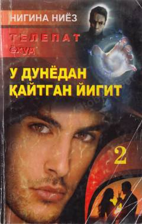

TYG'ayritabiiy qobiliyatli insonlar hayotiga bag'ishlangan sirli va qiziqarli detektiv asar.
Ushbu asar g'ayritabiiy qobiliyatga ega insonlar hayotida yuz bergan sirli voqealar asosida yozilgan. Kitobda bosh qahramon Ipakning uyida sodir bo'layotgan g'alati hodisalar va uning atrofidagi voqealar rivoji tasvirlanadi.